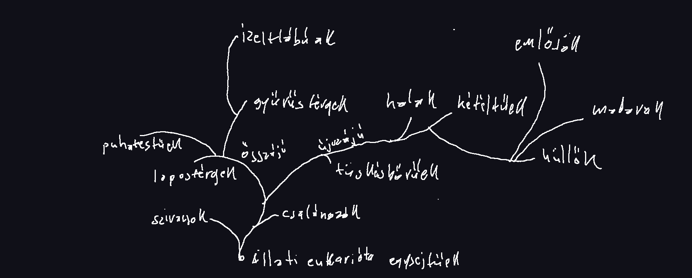
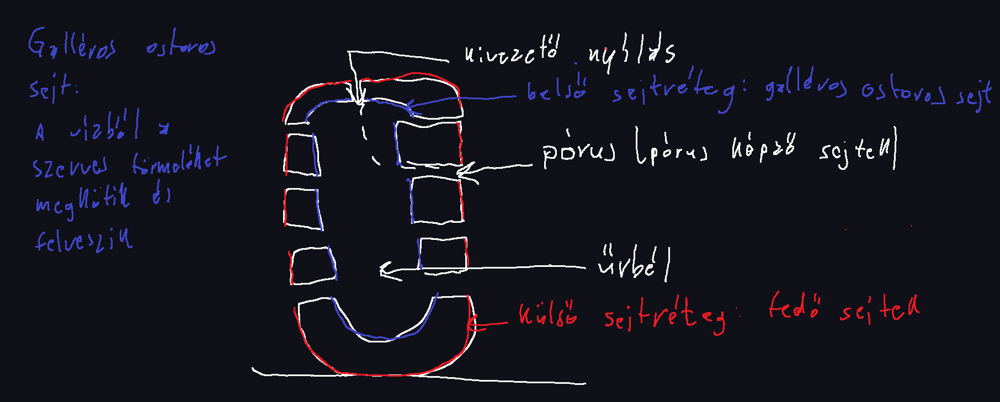
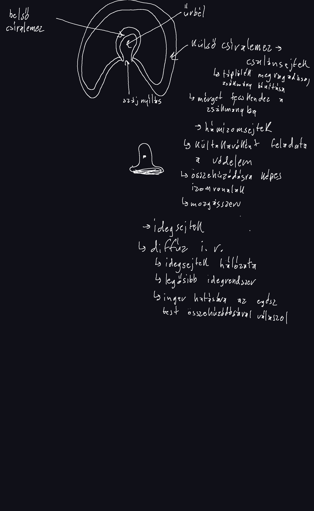
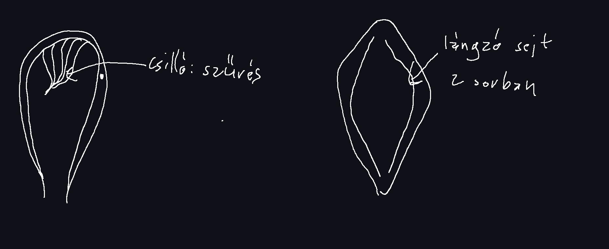
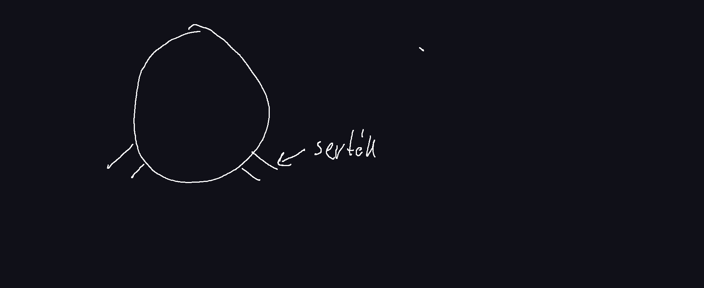

Testszerveződés
Csíralemez sejtjei tovább differenciálódnak.
-
Külső csíralemez:
- kültakaró
- idegrendszer
-
Középső csíralemez
- keringés
- kiválasztás szervei
- ivarszervek
- váz rendszer
- izom rendszer
-
Belső csíralemez
- tápcsatorna
- légzés szervrendszer
Állatok törzsszerveződése
Szivacsok
Több millió évvel ezelőtt jelentek meg, azóta változatlan formában jelen vannak
Tőlük nem származtatunk más állatcsoportot, ezért evolúciós zsákutcának tekintjük őket.
Testszerveződés
Valódi szövetek nincsenek.
Telepesek, álszövetes
Részleges munkamegosztás sejtek között
Felépítés
Képviselőik
-
Mészszivacsok
- Mészből van a vázuk
- Telepet képeznek
-
Retekszivacsok
- Magyar o.-n is tavakban fordul elő
- Vénuszkosárka
- Kovaszivacs: vázuk kovát tartalmaz
- Szaru szivacsok
- Balatoni szivacs ilyen
- telepes
Csalánozók
Testszerveződés
- 2 csíralemezes szerveződési szint, valódi szövetes
- testüreg nélküli állatok
-
Például:
- Medúzák
- Hidrák
- Sugaras szimeetria
Alakjuk
Medúza alak
- Szájnyílás lefelé néz
- tapogató is lefele néz
- Lebegő életmód
Polip alak
- szájnyílás felfelé néz
- tapogatók is felfele néznek
- Helytülő, bukfencező mozgás
Rakéta elv alapján mozognak
Testfelépítés
Ivarsejtek
mirigysejt
Emésztő nedvet termel, ami az űrbélbe ürül: sejten kívüli emésztés
emésztő sejt
Bekebelezéssel veszi fel a táplálékot: sejten belüli emésztés
Kettős emésztés
Anyagszállítás
Keringési rendszerük nincs, az anyagszállítást a béledény rendszer végzi.
Kiválasztás
Elővesécske
-
Lángzó sejt

Idegrendszer
Dúc idegrendszer, feji végen központosult agy dúc, testben idegrostköteg
Erzékszervek: feji részen fényérzékelő sejtek - szem
Szaporodás
Ivarosan szaporodnak, hímnősek(női és férfi ivarsejteket is tartalmaz a testük)
Képviselői
Örvényféreg
Tejfehér planária
- 25-30mm
- szinte minden vízben előfordul
Galandférgek
Pl: kutyagalandféreg
- Belső élősködők, szélsőségesen alkalmazkodik az élősködő életmódhoz, a tápanyagot testfelúletén veszi fel, nincs bélrendszere.
- Utolsó ízeivel szaporodik
Horgos szívóféreg
Májmétely
- Szívóka
- béledény rendszer
- Szájnyíláson veszi fel a táplálékot
Gyűrűsférgek
Testszerveződés
- 3 csíralemezesek
- valódi testüreges állatok
- ősszájúakhoz tartoznak
-
testük szelvényezett
Szelvényezettség: külső belső szelvényezettséget jelent, a belső szervek szelvényenként ismétlődnek
Mozgás, kültakaró
- Féregmozgás
- Bőrizomtömlő
-
Serték segítik a mozgásukat
 - nincs váza
- Testük mirigyekben gazdag, nyálkás, segíti a haladást
Táplálkozás
-
2 testnyílás
-
bélcső
- előbél
- középbél
- utóbél
-
bélcső
Légzés
-
Diffúz légzés (kültakarón keresztül)
- Fontos a nyálkás kültakaró
Keringés
- Zárt keringési rendszer: az erek zárt rendszert alkotnak, bennük vér kering
- Vérük hemoglobint tartalmaz, vérplazmában oldott állapotban fordul elő, piros
Kiválasztás
- Vesécske - szelvényenként ismétlődik
Idegrendszer - érzékelés
-
Dúcidegrendszer
- feji végen: hasdúc
-
hasi oldalon:
- idegrost
- szelvényenként dúcok
-
Erzékszerv:
- Feji végen fényérzékelő sejtek
Szaporodásuk
- hímnős
- kölcsönös megtermékenyítés
- közvetlenül fejlődnek
Földigiliszta
- talajevő (szerves törmelékevő)
- talajlazító hatásuk van
Orvosi pióca
- sekély patakokban, vizekben él
- külső élősködő: exoparazita
- melegvérű állatok vérét szívja
Puhatestűek
Testszerveződés
- 3 csíralemezes
- valódi testüreg
- kétoldali szinum
- szelvényezetlen
Testtájak
| testtájak | Csigák | Kagylók | Fejlábúak |
|---|---|---|---|
| láb | hasláb | ékláb | fejláb |
| fej | + | - | fejláb |
|
zsigerzacskó (belső szervek) |
+ | + | + |
| köpeny | + | + | + |
Váz-
Nem valódi váz: mozgásban szerepet játszó izmok nem tapadnak hozzá
- Külső váz (csigaház, kagylóhéj, fejlábúaknál csak a csökevénye: szépiacsont)
- Mésztartalmú
- Köpeny termeli
- Feladata a védelem
Kültakaró, mozgás
| bőrizomtömlő | |
| egyrétegű hengerhám | sima izom |
Váladék termelő mirigyek
- szárazföldi csigáknál
- segíti a mozgást
Táplálkozás
csigák:
- növényevő
- ragadozó
- törmelékevők
- ragadozók